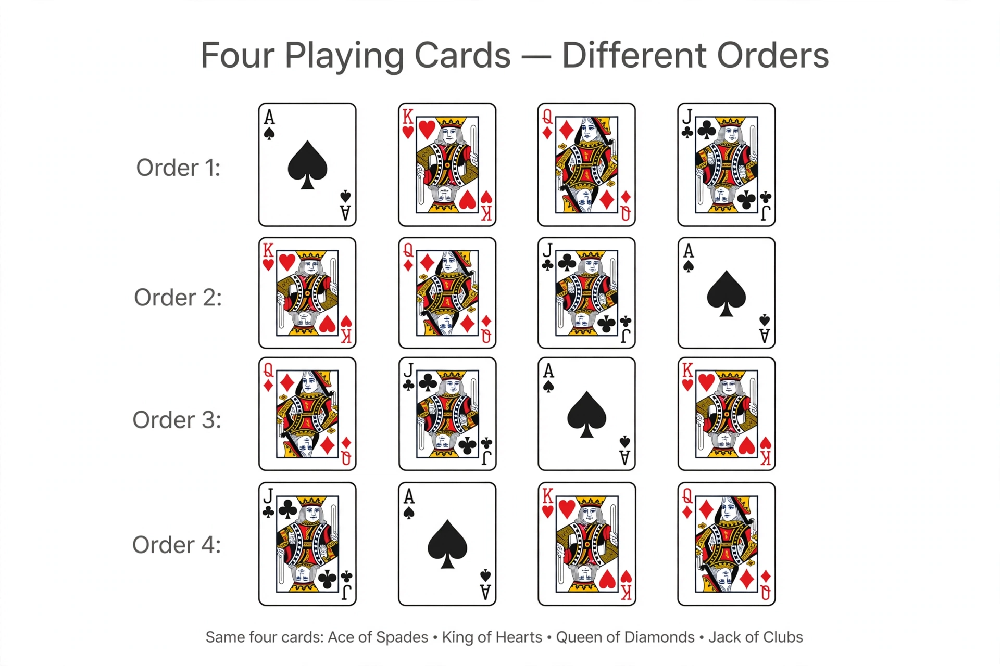

Permutation

[Image: Four playing cards shown in several different orders in rows]
In mathematics, a permutation of a set is a rearrangement of its elements into a sequence or ordering. The number of permutations of n distinct objects is n! (n factorial): 3 objects have 6 orderings, 10 objects have 3,628,800.
Permutations are objects of combinatorics and also functions — each rearrangement is a bijection of the set to itself, and all permutations of a set form a group under composition, the symmetric group, fundamental to algebra and to Galois theory.
Structure
Every permutation decomposes uniquely into cycles — subsets of elements rotated among themselves — and into swaps (transpositions); whether it takes an even or odd number of swaps defines its parity, a quantity invariant that controls, among other things, which sliding-tile puzzles can be solved.
Permutations with repetitions, and partial permutations (ordered selections), generalise the counting: choosing an ordered k from n gives n!/(n−k)!.